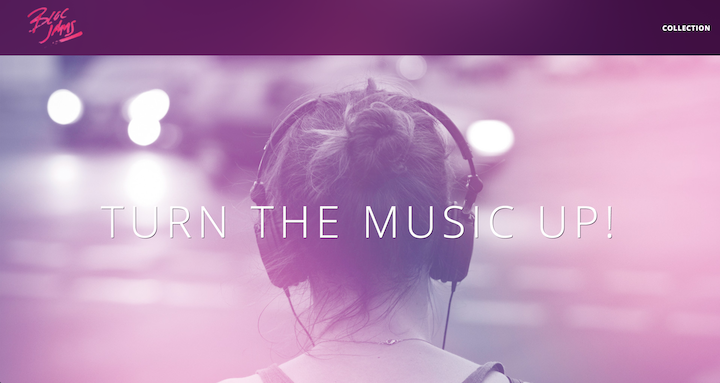
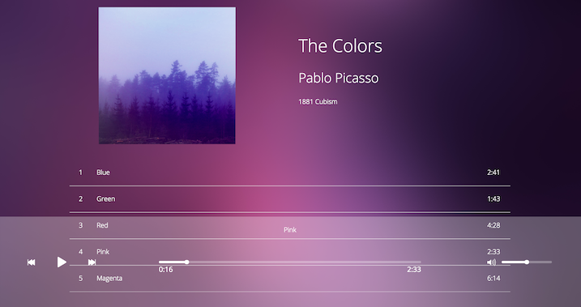

Bloc Jams is a mobile friendly faux online music player built with Angular.
Bloc Jams features functional media controls plus song duration and volume seek bars.
Most importantly, Bloc Jams offers a glimpse of the UX development skills I've acquired thus far.